For example, let’s say we want to compare life expectancy in Latin America with EU
#Setting pathlibrary("dplyr")setwd("/Users/bgpopescu/Library/CloudStorage/Dropbox/john_cabot/teaching/big_data/week4/data/")#Step1: Loading the datalife_expectancy <-read.csv(file ='./life-expectancy.csv')urbanization <-read.csv(file ='./share-of-population-urban.csv')#Step2: Removing countries with no 3-letter codelife_expectancy2<-subset(life_expectancy, Code!="")#Step3: Changing variable namenames(life_expectancy2)[names(life_expectancy2)=="Life.expectancy.at.birth..historical."]<-"life_exp"#Step4: Selecting only vars of interestlife_expectancy3<-subset(life_expectancy2, selec=c("Entity", "Code", "Year", "life_exp"))#Step5: Removing countries with no 3-letter codeurbanization2<-subset(urbanization, Code!="")#Step6: Changing variable namenames(urbanization2)[names(urbanization2)=="Urban.population....of.total.population."]<-"urb"#Step7: Selecting only vars of interesturbanization3<-subset(urbanization2, selec=c("Code", "Year", "urb"))#Step8: Performing a mergefinal<-left_join(life_expectancy3, urbanization3, by =c("Code"="Code","Year"="Year"))#Step9: Removing NAsfinal2<-final[complete.cases(final), ]#Step10: Defining continents#EU Countrieseu_countries<-c("Austria","Belgium","Bulgaria","Croatia","Cyprus","Czechia","Denmark","Estonia","Finland","France","Germany","Greece","Hungary","Ireland","Italy","Latvia","Lithuania","Luxembourg","Malta","Netherlands","Poland","Portugal","Romania","Slovakia","Slovenia","Spain","Sweden")latam_countries<-c("Belize","Costa Rica","El Salvador","Guatemala","Honduras","Mexico","Nicaragua","Panama","Argentina","Bolivia","Brazil","Chile","Colombia","Ecuador","Guyana","Paraguay","Peru","Suriname","Uruguay","Venezuela","Cuba","Dominican Republic","Haiti")#Step11: Labeling continents final2$continent[final2$Entity %in% eu_countries]<-"EU"final2$continent[final2$Entity %in% latam_countries]<-"Latin America"final2$continent[is.na(final2$continent)]<-"Everything Else"
Advice for Barplots
For example, let’s say we want to compare life expectancy in Latin America with EU
library(ggridges)ggplot(final2, aes(x = life_exp, fill = continent)) +geom_density(alpha =0.5)+guides(color ="none")
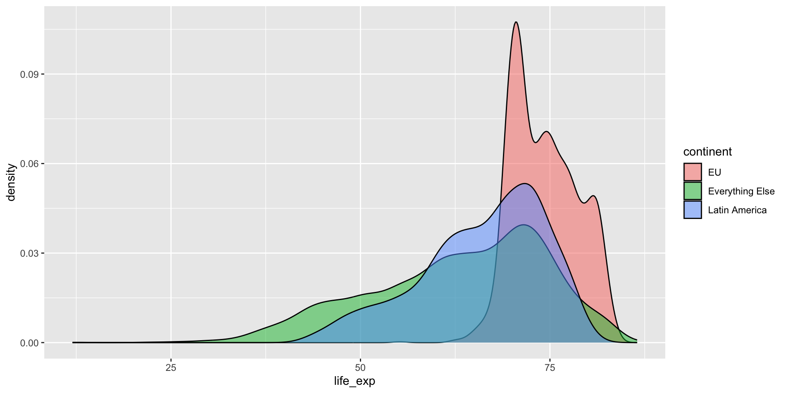
Plotting Uncertainty
As discussed it is good to add more information to your graphs to display the whole distribution of numbers
For example, the right is better than the left
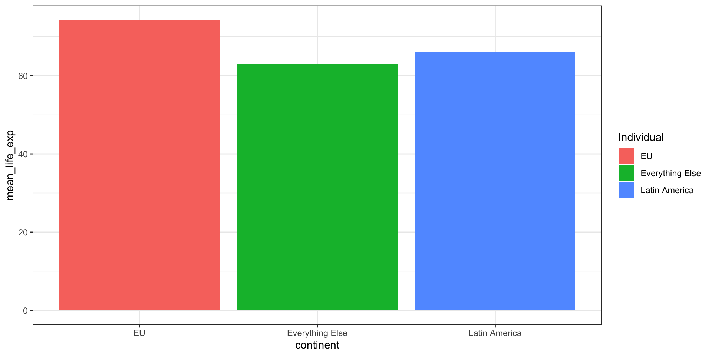
Plotting Uncertainty
This is the code for left and right
ggplot(averages, aes(x = continent, y = mean_life_exp, fill = continent)) +geom_col() +labs(fill ="Individual") +theme_bw()
ggplot(final2, aes(x = life_exp, fill = continent)) +geom_histogram(binwidth =2, color ="white") +guides(fill ="none") +# Turn off legendfacet_wrap(vars(continent))+theme_bw()
Plotting Uncertainty
It could also be helpful to play with the binwidth: binwidth = 2
ggplot(final2, aes(x = life_exp, fill = continent)) +geom_histogram(binwidth =2, color ="white") +guides(fill ="none") +# Turn off legendfacet_wrap(vars(continent))+theme_bw()
Plotting Uncertainty
It could also be helpful to play with the binwidth: binwidth = 10
ggplot(final2, aes(x = life_exp, fill = continent)) +geom_histogram(binwidth =10, color ="white") +guides(fill ="none") +# Turn off legendfacet_wrap(vars(continent))+theme_bw()
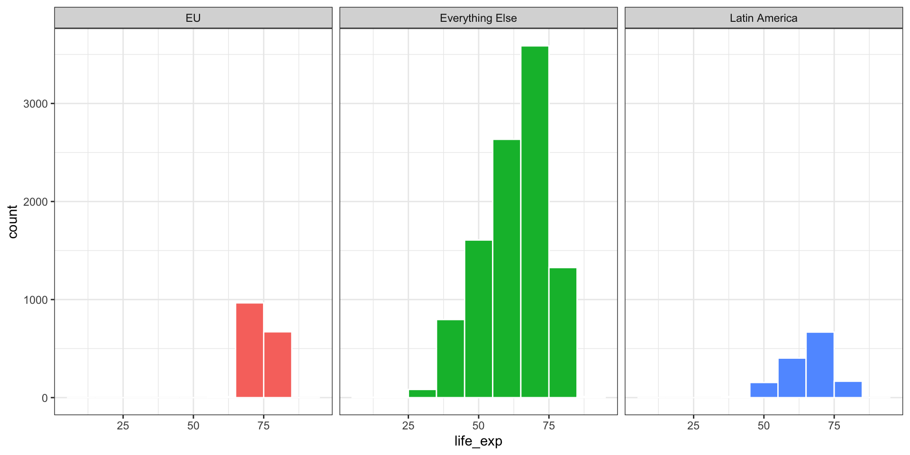
Plotting Uncertainty
We can obtain something similar with densities: they are a smoothed version of the histogram.
ggplot(final2, aes(x = life_exp, fill = continent)) +geom_density() +guides(fill ="none") +# Turn off legendfacet_wrap(vars(continent))+theme_bw()
Plotting Uncertainty
The difference is that one should count and the other one density.
The second shows the probability density function (PDF) of the variable: use calculus to find the probability of each x value
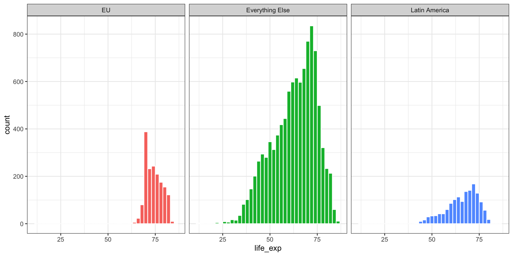
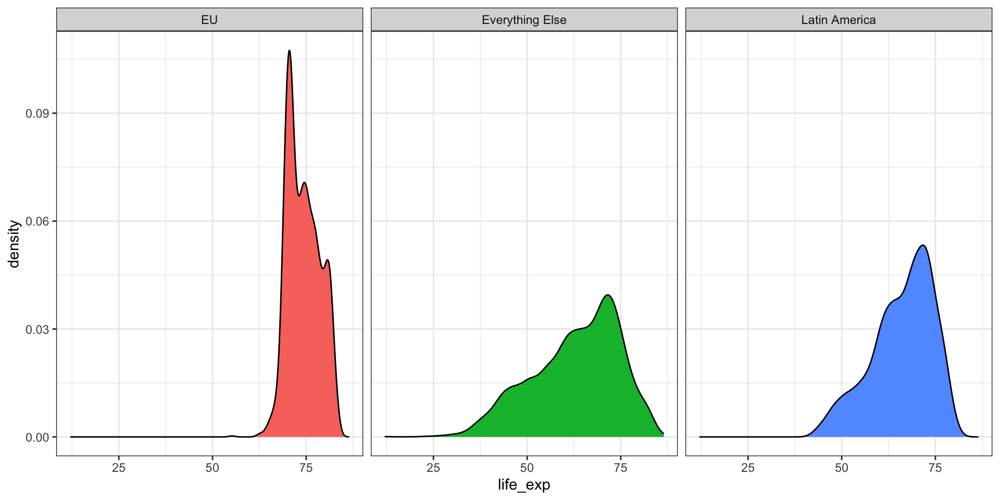
Plotting Uncertainty
We can obviously also plot them together
ggplot(final2, aes(x = life_exp, fill = continent)) +geom_histogram(binwidth =2, color ="white") +#scale the density to a similar scale to the histogram:#in this case, I multiply by 4000#note also aes(y = ..density..* 4000)geom_density(aes(y = ..density..*4000), alpha =0.5)+guides(fill ="none") +# Turn off legendfacet_wrap(vars(continent))+theme_bw()+#Adding a secondary axisscale_y_continuous(name ="count",sec.axis =sec_axis(~.x/4000, name ="density"))
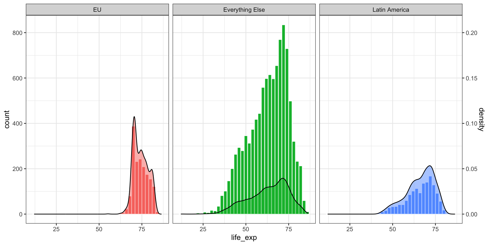
Plotting Uncertainty
Having a closer look at the code
ggplot(final2, aes(x = life_exp, fill = continent)) +#geom_histogram with the same parametersgeom_histogram(binwidth =2, color ="white") +#note the aes(y = ..density..* 4000)#scale the density to a similar scale to the histogram#in this case, I multiply by 4000#otherwise it will not be visible#density calculates relative frequency:#count / sum(count): e.g. 385/1403geom_density(aes(y = ..density..*4000), alpha =0.5)+guides(fill ="none") +# Turn off legendfacet_wrap(vars(continent))+theme_bw()+#Adding a secondary axisscale_y_continuous(name ="count",sec.axis =sec_axis(~.x/4000, name ="density"))
Why use a density curve vs. a histogram?
A histogram shows the counts of values in each range
It is made up of bars that touch each other
A density plot shows the proportion of values in each range
It is a smooth curve that shows the distribution of the data in a more continuous way
Frequencies and Densities
Box Plots
Here is a boxlot for life expectancy for the entire dataset
We can highlight specific observations in our data
#Creating a Variable to Identify Obslife_exp_urb$eu<-ifelse(life_exp_urb$type=="EU", 1, 0)#Making the variable a factorlife_exp_urb$eu<-as.factor(life_exp_urb$eu)#Plottingggplot(data = life_exp_urb, mapping =aes(x=urbanization, y=life_expectancy, color = eu))+geom_point()+scale_color_manual(values =c("grey70", "red"))+guides(color ="none")
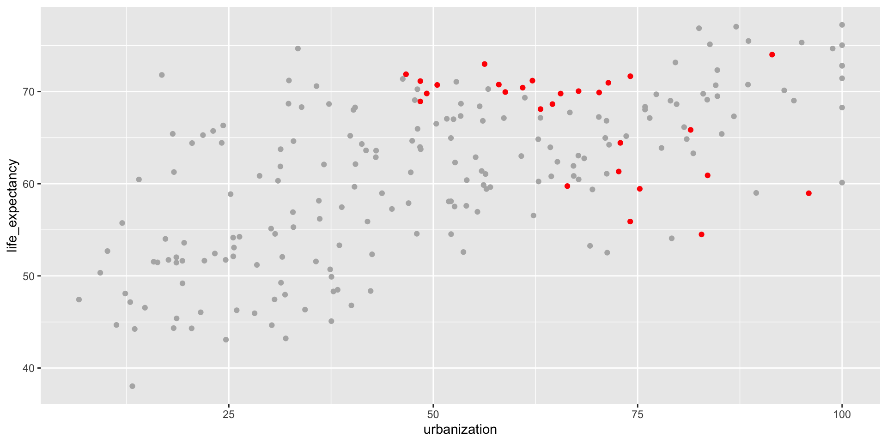
Annotating Graphs
This is how we can add text in the graph
ggplot(data = life_exp_urb, mapping =aes(x=urbanization, y=life_expectancy, color = eu))+geom_point()+scale_color_manual(values =c("grey70", "red"))+guides(color ="none")+annotate(geom ="text",x =75, y =45,label ="EU Countries", color="red")
Annotating Graphs
This is how we can add a rectangle around our points of interest
# A tibble: 3 × 2
Year mean_life_exp
<int> <dbl>
1 1543 33.9
2 1548 38.8
3 1553 39.6
Temporal Data
We are now read to plot the time trend
ggplot(life_expectancy2, aes(x = Year, y = mean_life_exp)) +geom_line()
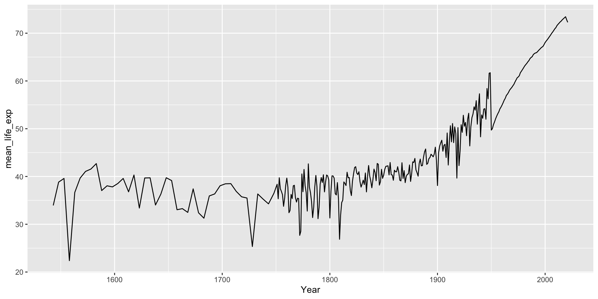
Temporal Data
We can also produce an animation
library(gganimate)ggplot(life_expectancy2, aes(x = Year, y = mean_life_exp)) +geom_line()+labs(title ='Year: {frame_along}', x ='Urbanization', y ='Life Expectancy') +transition_reveal(Year)
Temporal Data
To view the upward sloping trend in life expectancy, it might be worth aggregating some of the years.
ggplot(life_expectancy2, aes(x = Year, y = mean_life_exp)) +geom_line()+geom_smooth()
Temporal Data: Two Countries
Let us imagine that we want to compare Italy and the US in life expectancy
This means we go back to the original file and select the US and Italy
#Subsetting the datalife_expectancy_itus<-subset(life_expectancy, Entity %in%c("Italy", "United States"))#Selecting only after 1900life_expectancy_itus<-subset(life_expectancy_itus, Year>1899)#Renaming life expectancy variablenames(life_expectancy_itus)[names(life_expectancy_itus)=="Life.expectancy.at.birth..historical."]<-"life_exp"
Let’s examine the data
head(life_expectancy_itus, n=4)
Entity Code Year life_exp
8583 Italy ITA 1900 41.67
8584 Italy ITA 1901 43.54
8585 Italy ITA 1902 42.99
8586 Italy ITA 1903 43.11
Temporal Data: Two Countries
We can now plot life expectancy for the two countries over time
#Plottingggplot(life_expectancy_itus, aes(x=Year, y= life_exp, color = Entity))+geom_line()+scale_colour_viridis_d()
Temporal Data: Two Countries
Changing the starting value of our y-axis can change the appearance of our data
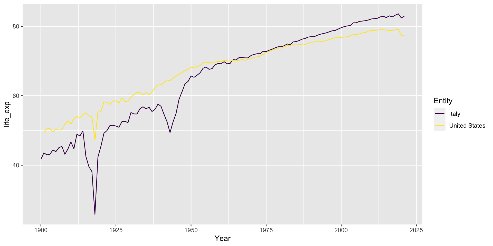
Temporal Data: Two Countries
Changing the starting value of our y-axis can change the appearance of our data
ggplot(life_expectancy_itus, aes(x=Year, y= life_exp, color = Entity))+geom_line()+scale_colour_viridis_d()
ggplot(life_expectancy_itus, aes(x=Year, y= life_exp, color = Entity))+geom_line()+scale_colour_viridis_d()+ylim(0, NA)
Another cool way to visualize data is to create density ridges for every year
We will however want fewer years to make the graph easier to read
Visualizing Time
Here is how we go about it:
#Step1: Load the librarylibrary("forcats")#Step2: Subset the data to fewer yearsfinal3<-subset(final2, Year>1980)#Step3: Turn year into factorfinal3$year_factor<-as.factor(final3$Year)#Step4: Plotggplot(final3, aes(x = life_exp, y =fct_rev(as.factor(Year)), fill = ..x..))+geom_density_ridges_gradient(color ="white", quantile_lines =TRUE)+labs(x ="Life expectancy", y =NULL, fill =NULL)+scale_fill_viridis_c(name ="")
Visualizing Time
This produces:
Visualizing Time
We can see this way the first, second, and third quartile
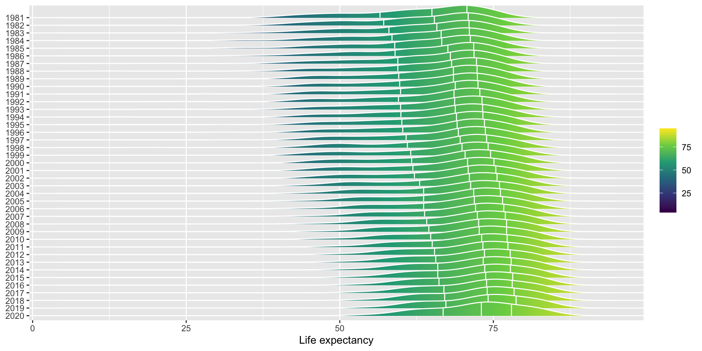
Visualizing Time
We also see that the life expectancy gets narrower over time: most people live longer lives
Saving Figures
One final aspect related to visualization is how we save the data
Write a function called histogram_plot that takes a vector data as input and generates a histogram using ggplot2.
set.seed(123)data <-rnorm(100, mean =0, sd =1)histogram_plot(data)
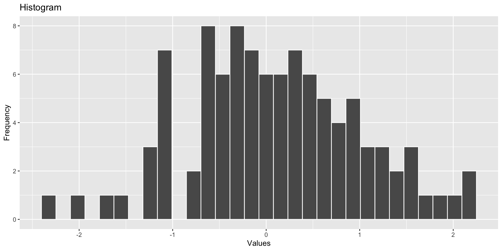
Exercise 3: Produce a time visualization like below:
Exercise 4:
Create the following dataframe:
# Load required librarylibrary(ggplot2)# Generate a fun datasetset.seed(123) # for reproducibilityn_creatures <-50creatures <-data.frame(type =rep(c("Dragon", "Unicorn", "Yeti"), each = n_creatures),cuteness =c(rnorm(n_creatures, mean =8, sd =2),rnorm(n_creatures, mean =7, sd =2),rnorm(n_creatures, mean =5, sd =2)),fierceness =c(rnorm(n_creatures, mean =7, sd =2),rnorm(n_creatures, mean =5, sd =2),rnorm(n_creatures, mean =8, sd =2)))